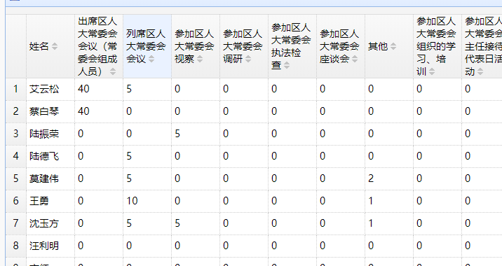

表格内容自动换行可以通过设计表格属性 nowrap:false来实现，默认值为true；
但是easyui并未提供，表头自动换行的解决方案，因为一般我们的数据表格列名都是固定的，想换行的话可以通过<br/>来实现，
但是特殊情况，例如：列名是动态生成的，并不固定，没办法，不能直接通过设置属性来实现。
但是自己可以通过设置css来覆盖easyui的样式来实现：
.datagrid-header-row .datagrid-cell span {
white-space: normal !important;
word-wrap: normal !important;
}
效果：
